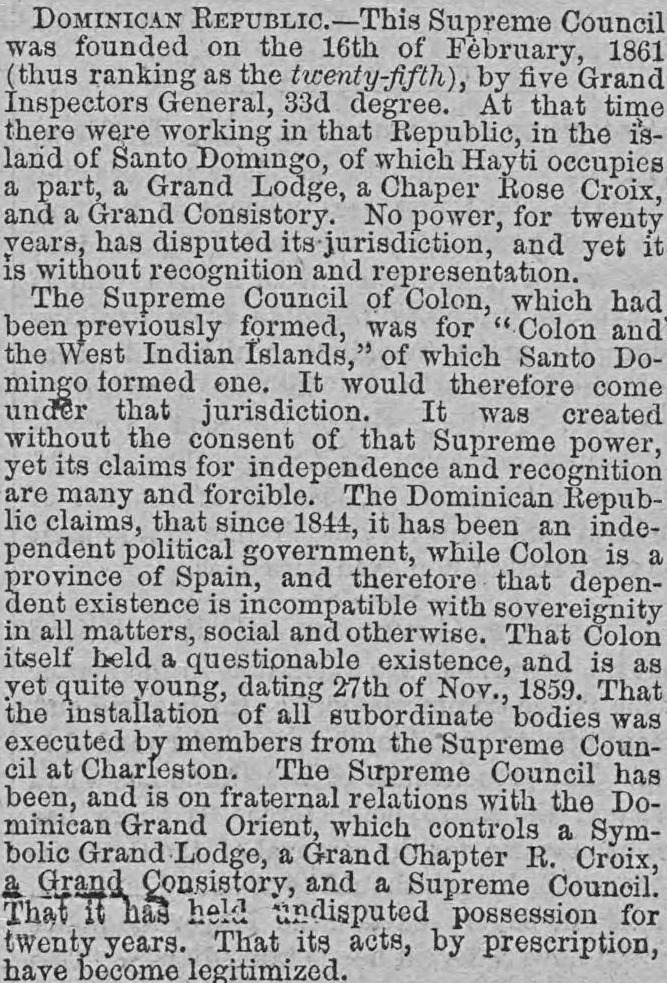
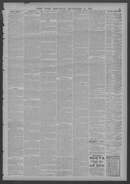

See the full pageVer la página completaAt that time there were working in that Republic, in the island of Santo DomingoEn aquel tiempo trabajaban en aquella República, en el
According to the New York dispatch of September 11, 1881, the Dominican Republic has functioned as an independent political government since 1844 and maintained undisputed Masonic jurisdiction on the island of Santo Domingo for twenty years without recognition. The Dominican Grand Orient—which controls a Symbolic Grand Lodge, a Grand Chapter R. Croix, a Grand Consistory, and a Supreme Council—argues that its long-standing possession legitimizes its acts, unlike Colon, which is a Spanish province and a dependent existence incompatible with sovereignty.Según el New York dispatch del 11 de septiembre de 1881, la República Dominicana se rige como gobierno político independiente desde 1844 y ha sostenido una jurisdicción masónica incontestada en la isla de Santo Domingo durante veinte años sin reconocimiento exterior. El Gran Oriente Dominicano —que rige una Gran Logia Simbólica, un Gran Capítulo Rosa-Cruz, un Gran Consistorio y un Supremo Consejo— sostiene que su prolongada posesión legitima sus actos, a diferencia de Colón, que es provincia española y cuya existencia dependiente pugna con la soberanía.
FULL TEXT:TRADUCCIÓN:
ANCIENT ACCEPTED SCOTTISH RITE.RITO ESCOCÉS ANTIGUO Y ACEPTADO.
DOMINICAN REPUBLIC.--This Supreme Council was founded on the 16th of February, 1861 (thus ranking as the twenty-fifth), by five Grand Inspectors General, 33d degree. At that time there were working in that Republic, in the Island of Santo Domingo, of which Hayti occupies a part, a Grand Lodge, a Chaper Rose Croix, and a Grand Consistory. No power, for twenty years, has disputed its jurisdiction, and yet it is without recognition and representation.REPÚBLICA DOMINICANA.—Este Consejo Supremo fue fundado el 16 de febrero de 1861 (ocupando así el vigésimo quinto lugar), por cinco Grandes Inspectores Generales, grado 33. En ese momento trabajaban en esa República, en la Isla de Santo Domingo, de la cual Haití ocupa una parte, una Gran Logia, un Capítulo Rosa Cruz, y un Gran Consistorio. Ningún poder, por veinte años, ha disputado su jurisdicción, y sin embargo está sin reconocimiento ni representación.
The Supreme Council of Colon, which had been previously formed, was for "Colon and the West Indian Islands," of which Santo Domingo formed one. It would therefore come under that jurisdiction. It was created without the consent of that Supreme power, yet its claims for independence and recognition are many and forcible. The Dominican Republic claims, that since 1844, it has been an independent political government, while Colon is a province of Spain, and therefore that dependent existence is incompatible with sovereignty in all matters, social and otherwise. That Colon itself held a questionable existence, and is as yet quite young, dating 27th of Nov., 1859. That the installation of all subordinate bodies was executed by members from the Supreme Council at Charleston. The Supreme Council has been, and is on fraternal relations with the Dominican Grand Orient, which controls a Symbolic Grand Lodge, a Grand Chapter R. Croix, a Grand Consistory, and a Supreme Council. That it has held undisputed possession for twenty years. That its acts, by prescription, have become legitimized.El Consejo Supremo de Colón, que había sido formado previamente, era para «Colón y las Islas de las Indias Occidentales», de las cuales Santo Domingo formaba una. Por tanto vendría bajo esa jurisdicción. Fue creado sin el consentimiento de ese poder Supremo, sin embargo sus reclamos de independencia y reconocimiento son muchos y contundentes. La República Dominicana reclama, que desde 1844, ha sido un gobierno político independiente, mientras Colón es una provincia de España, y por tanto esa existencia dependiente es incompatible con la soberanía en todos los asuntos, sociales y otros. Que Colón mismo tuvo una existencia cuestionable, y es todavía bastante joven, datando del 27 de noviembre de 1859. Que la instalación de todos los cuerpos subordinados fue ejecutada por miembros del Consejo Supremo en Charleston. El Consejo Supremo ha estado, y está en relaciones fraternales con el Gran Oriente dominicano, que controla una Gran Logia Simbólica, un Gran Capítulo R. Cruz, un Gran Consistorio, y un Consejo Supremo. Que ha tenido posesión indiscutida por veinte años. Que sus actos, por prescripción, se han legitimado.
New York Dispatch. New York, September 11, 1881. Page 3.